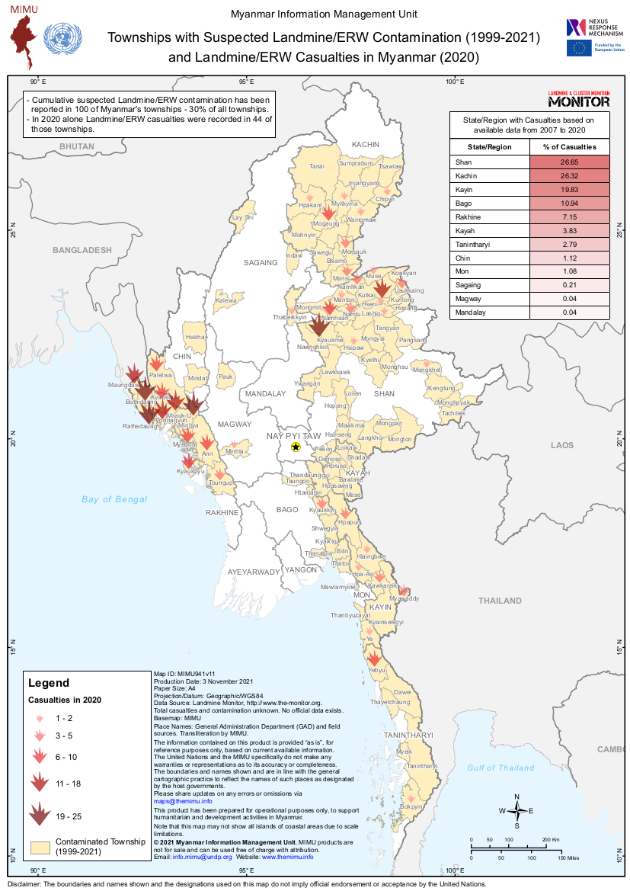

This English-language infographic presents a national overview of suspected landmine contamination and casualty reports in Myanmar. By translating complex data into visual form, it allows viewers to grasp the geographic scale of explosive hazard at a glance.
Within this archive, it complements the personal testimonies and field photographs by providing a broader perspective on the structural dangers civilians face.

Method: metadata / map / infographic analysis
This artifact (A12_map_mine_infographic_english_raw.png) was processed through the map and infographic metadata pipeline.
See consolidated results in the AI Analysis section.
It helps place individual artifacts within a national pattern of risk.